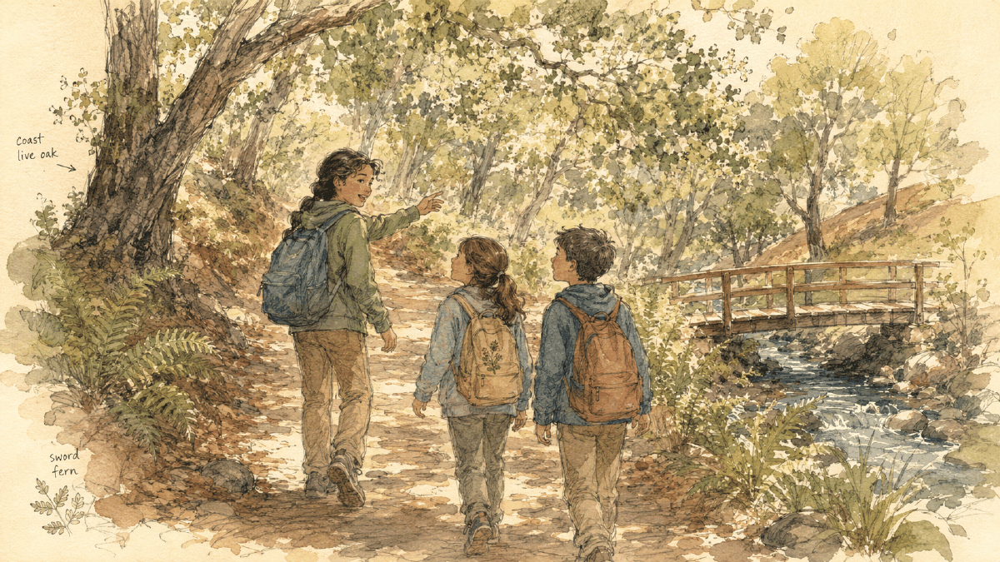

Bridge to Middle School
Let an older kid show the younger ones the way
The jump from fifth grade to middle school is one of the biggest a kid faces — and for many Berkeley kids it's their first time changing schools at all. One of the gentlest ways through it isn't a talk or a tour. It's a walk: bring an older kid who's already made the leap along on our Thousand Oaks → John Hinkel Park hike, and let them lead the younger ones. The route is already mapped — you just pick a Saturday.

The Jump Nobody Talks About
Ask a fourth or fifth grader what they think about middle school and you'll often hear a long pause. Bigger building, older kids, a locker, switching classes, a brand-new set of faces — it's a lot, and it usually arrives as a vague, abstract worry rather than anything a child can name. The fifth-to-sixth grade transition is one of the most anxiety-producing moments of childhood, and for plenty of Berkeley families it's the first school change of all.
The most reassuring thing isn't more information. It's a real person — someone a little older who has already walked through that door and come out fine, and who's happy to answer the small questions a kid is too shy to ask a grown-up.
What We Noticed on the Trail
This page exists because of something we didn't plan. Our hikes started with a group of elementary kids — and they didn't stop when the oldest of them moved up to middle school. He kept coming back to walk with the younger ones, and something quietly clicked. The little kids weren't getting a lecture about sixth grade; they were getting a whole morning beside someone who was living it, and who they already looked up to.
By the end of the walk, middle school had stopped being a fog of unknowns. It had a face, a voice, and a few good stories. The older kid, for his part, got to be the one who knew the way — and stayed connected to the younger world he'd just left. The hike did the work that no pep talk could.

What a Mentor Hike Looks Like
There's nothing to organize and no program to sign up for. It's just our regular hike with one small twist: the older kid leads. They find the turns, keep an eye on the little ones, and point things out along the way — the bend in the path, a banana slug, the Bay glinting between the houses, the waterfall up ahead. The grown-ups walk behind and let it happen.
The middle-school questions come out on their own, because a trail is an easy place to talk. Is the homework really that much? Did you get lost the first week? Are the big kids mean? What's lunch like? Answered by someone two years ahead instead of a parent, those answers land differently — and the worry shrinks with every step.
Why It Works
-
A real person, not an abstract fear
Middle school stops being a scary unknown and becomes a real place inhabited by someone the younger kid already trusts. Fear of the unfamiliar fades fastest when the unfamiliar gets a face.
-
The older kid stays connected — and gets to lead
Coming back to guide the younger ones keeps an older kid tied to the elementary world they just left, and hands them a real leadership role. Being the one who knows the way is good for them too.
-
A structure that already exists
Thousand Oaks already pairs older and younger students as reading buddies. That same gentle mentorship turns out to work beautifully out on the trail — no new structure required.
-
Time outside settles everyone
Green space and the sound of running water improve attention, lift mood, and lower stress — for the anxious younger kid, the older mentor, and the grown-ups all at once.
What Each Kid Gets
-
For the older kid
A chance to be the guide instead of the new kid. They revisit the trails of their younger years, practice looking out for someone smaller, and discover they know more than they thought — about the hike, and about middle school.
-
For the younger kid
A trusted face on the thing they've been quietly dreading, real answers to the questions they didn't know how to ask, and a morning's adventure with a big kid they admire. Middle school starts to feel survivable — even exciting.
The Route Is Already Mapped
You don't have to plan a thing. Our companion hike guide lays out the whole walk, stop by stop — from Thousand Oaks Elementary up the Indian Rock Path, past a sweeping view of the Golden Gate and the Bay, to a real rock to climb at Indian Rock Park, the Ohlone mortar stones, and the quiet waterfall at John Hinkel Park to finish. It's about 90 minutes at an easy pace, with plenty of stops to talk.
The guide has the turn-by-turn directions, what to bring, and how many grown-ups to bring along — everything you need to let the older kid lead with confidence.
At the Waterfall, Pause to Draw
The waterfall is the hike's quiet finish — a good place to sit a moment before turning for home. Hand each kid a sheet of paper and something to draw with, and let them sketch one thing they see: a fern, a wet stone, the falling water. The older kid can help the younger one get started. It's a small, calm note to end a conversation that mattered.

How to Set It Up
The whole thing comes down to one text message. Here's the literal next action:
- Think of one older kid. A sibling, a neighbor, a former classmate's big kid, someone from the buddy program who's moved up — anyone a year or two into middle school who your child looks up to.
- This week, text their family. Ask if their kid would like to lead a short, gorgeous hike for the younger ones some Saturday morning. Most older kids are flattered to be asked.
- Pick a Saturday and open the hike guide. Follow the route, let the older kid lead, and let the conversation happen on its own.
"Hi! [Younger kid] is heading toward middle school next year and is a little nervous about it. Would [older kid] want to lead them on a short, beautiful hike up to the John Hinkel Park waterfall some Saturday morning? There's a guide that maps the whole thing — and it'd mean a lot to have an older kid show them the ropes."
About the Club
The Berkeley Natural Explorers Club helps Berkeley kids get out into the city's parks and trails — building belonging, well-being, and a little leadership along the way. Bringing an older kid back to lead the younger ones is one of our favorite things that happens out there: the trail turns out to be a wonderful bridge across the years, easing the jump to middle school for one kid and growing another into a guide.
Make this the first of many. There's a whole East Bay out there — and it belongs to your kids as much as anyone's.